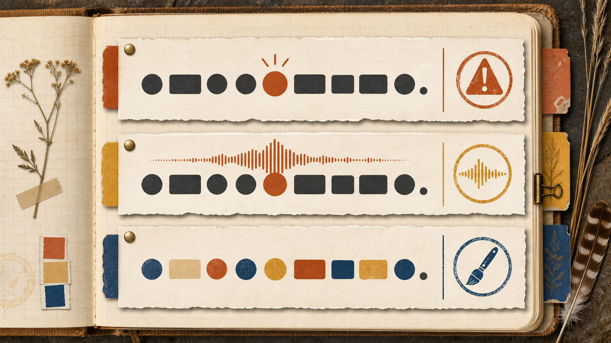

Name regions
Choose landmarks and text elements by meaning.
A page must communicate meaning to browsers, assistive technology, and software that never sees its pixels.
Choose landmarks and text elements by meaning.
Write alt text that matches an image’s job.
Match image properties to the right file type and folder.
<strong> for importance and <em> for spoken stress.<p>Drop-offs end <em>this</em> Friday.</p>Stress changes which Friday the sentence means.
<strong>Back up your data before the reset.</strong>Importance marks the warning visitors must not miss.
<div> and <span> group content without naming it.<div>A generic block-level container that stacks like a brick.
<span>A generic inline container that flows inside a sentence.

Quick check: If <strong> and <b> look bold, what does only one of them record?
<header>Introduces the page<nav>Holds major links in a list<main>Holds the page’s primary content exactly once<footer>Closes with related information<article>Use it for a post, recap, review, or other portable content.
<section>Use it for one themed part of this page with its own heading.
<div>Use it only when you need a container and no meaningful element fits.
The visible page may look the same, but its structure becomes easier to explore.
<main>elements on the page
<nav>elements on the page
Commit: Write both counts, then defend each with the element’s job.
<img> element works through attributes.<img
src="images/cactus-garden.png"
alt="Three green cacti in a gravel garden under an orange sky"
width="400"
height="400">srcAddresses the filealtStands in for pixelswidth + heightReserve honest spaceReplace the image with one useful sentence.
alt="Three green cacti in a gravel garden under an orange sky"alt="" tells a screen reader to skip it.
alt=""A linked logo describes where the link goes.
alt="PC Computer Club home"Pair share: What page change could turn a decorative cactus into an informative one?
Scale it past its true size and the squares show.
The computer redraws it sharp at any size.
Photos are raster by nature. Logos and diagrams live as vectors.
Flat illustrations, screenshots, and transparency
club-logo.png keeps its see-through cornersPhotographs at a smaller file size
the fall drive photo, at a fraction of the bytesSimple frame animation
the three-second sign-up demoLogos, icons, and diagrams
the logo redrawn sharp on a posterDecision: Which format fits a logo that must stay sharp on a phone and a poster?
skills-lab-3a-lastname/
├── recycling-guide.html├── contact.html├── drive-gallery.html└── images/├── club-logo.png└── recycling-drive.png
Retrofit landmarks and semantic text elements.
Add images, alt text, true dimensions, and a figure.
Build the gallery, test navigation, and validate all pages.
Exit ticket: Name one semantic choice and one image choice the validator cannot make for you.